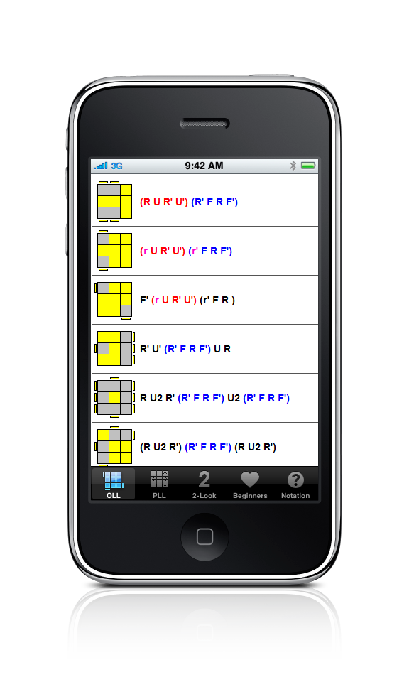
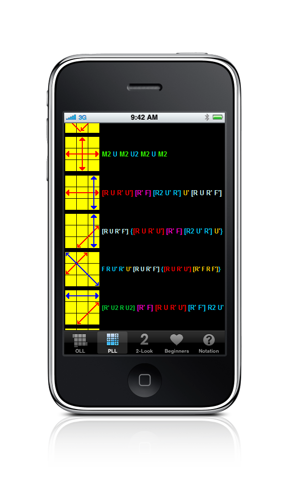
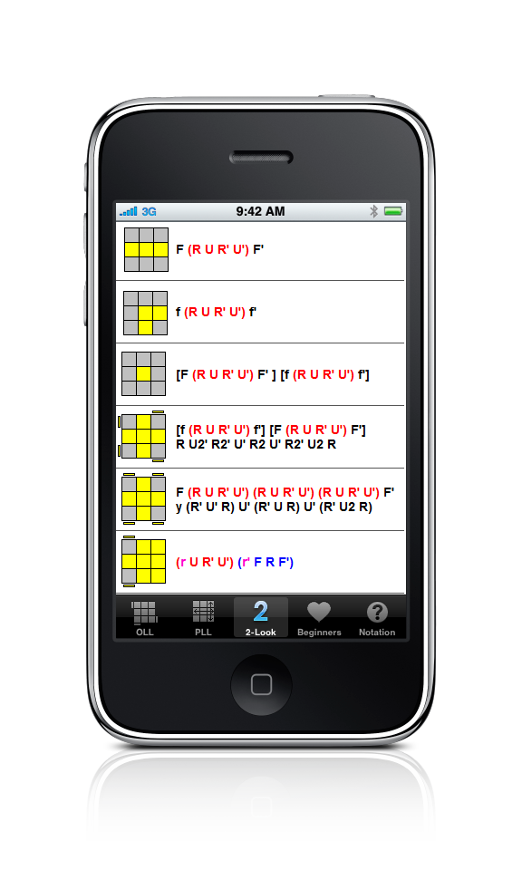
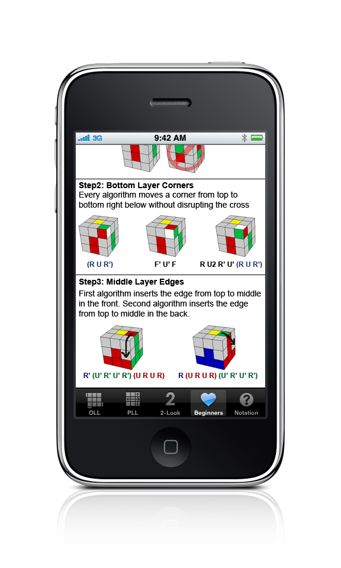
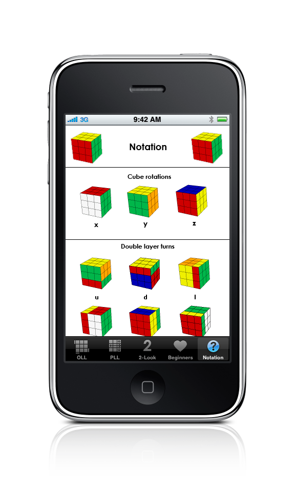

This application contains nicely color coded algorithms for the Rubik's Cube, as used by Badmephisto. Inside you will find:
1. OLL's (Orientation of Last Layer from Fridrich Method)
2. PLL's (Permutation of Last Layer from Fridrich Method)
3. 2-look OLLs and PLLs
4. Beginner's Method algorithms with reminders on how to use them
5. Notation page
For more detailed information on how to use any of these algorithms visit my website.
    